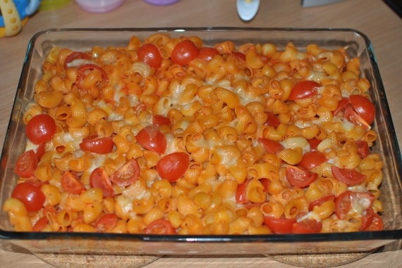

Cremiger Nudelauflauf

- Zubereitung: ca. 30 Minuten
- Backen: ca. 20 Minuten
- Für 4 Personen
Zutaten
- 400 g Penne
- 1 Zwiebel
- 2 Knoblauchzehen
- 1 Chilischote
- 500 g passierte Tomaten
- 200 ml Sahne
- 50 g geriebener Parmesan
- 125 g Mozzarella
- 400 g Cherrytomaten
- 1 Bund Basilikum
- Olivenöl
Zubereitung
- Den Ofen auf 200° Celsius (Umluft 180° Celsius) vorheizen. Die Zwiebel und den Knoblauch sehr fein schneiden. Die Chilischote entkernen und ebenso fein hacken. Die Kirschtomaten waschen und halbieren. Den Parmesan reiben und den Mozzarella grob
würfeln. Die Basilikumblätter abzupfen, waschen und trocken tupfen.
- In einem großen Topf Salzwasser zum Kochen bringen und die Nudeln darin laut Packungsangabe al dente garen. Währenddessen in einer großen Pfanne Olivenöl erhitzen und die Zwiebel, den Knoblauch und die Chilischote anschwitzen. Die passierten Tomaten
hinzufügen und ein paar Minuten leicht köcheln lassen. Dann die Sahne und den geriebenen Parmesan unterrühren und die Sauce mit Salz, Pfeffer und einer ordentlichen Prise Zucker abschmecken.
- Wenn die Nudeln soweit sind, diese abgießen und in die Pfanne zur Sauce geben. Die Pfanne von der Hitze nehmen und die halbierten Kirschtomaten und die Hälfte der Mozzarellawürfel unterheben. Die Basilikumblätter in Streifen schneiden und ebenfalls
unterheben.
- Alles zusammen in eine Auflaufform geben, mit dem restlichen Mozzarella bestreuen und für ca. 20 Minuten auf mittlerer Schiene im Backofen gratinieren lassen.